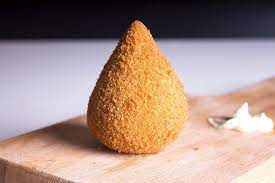

Inicio da página | Bolo de cenouro | Torta de maças| Coxinha
INGREDIENTES
Para a massa
2tabletes de caldo de galinha
Sal a gosto
6colheres (sopa) de Margarina Qualy Cremosa
750gde farinha de trigo
2ovos
2xícaras (chá) de farinha de rosca
Essa receita também pode ser feita com Margarina Qualy Multigrãos
MODO DE PREPARO
Para a massa
1
Numa panela grande, coloque 750 ml de água, o caldo de galinha, o sal e a margarina.
2
Quando começar a ferver, acrescente toda a farinha de trigo. Mexa vigorosamente até obter uma massa homogênea. No momento em que a massa se transformar numa bola e desgrudar do fundo, desligue o fogo e deixe esfriar.
3
Recheie com o sabor de sua preferência e modele no formato de uma coxinha, com a base arredondada e uma ponta em cima. Passe em uma mistura de ovos batidos e, a seguir, na farinha de rosca. Frite em óleo quente e sirva a seguir.
